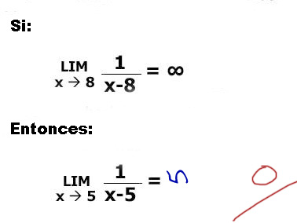

Método científico
 De: La Frikipedia, la enciclopedia extremadamente seria.
De: La Frikipedia, la enciclopedia extremadamente seria.
 Como vemos, éste genio no necesitó del método científico para lograr tan impresionante resultado. ¡Excelente!
El método científico (del zqhrés meta - inutilidad y odos - nadiz, doca, oredas) es el conjunto de pasos fijados de antemano por un pijo que nadie conoce, pero como buen hijoputa, nos arruina la esxistencia con un método tonto del tipo "diez sencillos pasos para dejar de ser gilipollas". El phijoputa tiene como objetivo que nos quebremos el cerebro tratando de usar su método inútil para resolver un simple problema (del tipo 2+2=Pez), mientras que fácilmente se puede resolver por simple uso de la lógica.
El método científico se caracteriza por que a nadie le importa dos cosas:
- Propiedad de reproductivilidad: Se supone que hasta el más gilipollas puede utilizarlo. También nos dice que el mismo estupidín lo puede hacer en cualquier lugar (el método, no lo que están pensando...). Entonces, digo yo, ¿para qué hay laboratorios? bola de phijoputas.
- Propiedad de falsabilidad (nomás se inventan choradas de palubras): Digamos que de verdad te interesa investigar algo. Digamos que pones todos los cojones, todo tu tiempo, todo tu esfuerzo en conseguir el resultado que deseas. Imagina que prácticamente toda tu vida sea dedicada a aplicar el método científico para probar algo... ¿Pues qué crees? ¡¡HUEVOS!! Por más bolas que pongas en encontrar una solución o un resultado, siempre habrá otro y aún peor phijoputa que dará por mierda todo lo que digas. Triste realidad. Y lo peor es que mientras más te esmeres en probar que lo que dices no es truño, más phijoputas salen para mandarte a tomar por culo.
Pijologías Tipologías
Un gran adepto al método científico, a la filosofía, a la metafísica y a la ciencia, como tal
Tiempo después de que el phijoputa hubiese acabado con su estupendo trabajo, notó que su vida no era nada si no jodía las vidas de los demás, así que extendió su obra creando y clasificando diversos métodos científicos.
Aquí se enlistarán algunos de ellos.
- Método impérico analítico: Pues prácticamente es decir lo primero que se te ocurra como resultado a una proposición. En éste caso, nuestro amigo, el phijoputa, se vio muy amable, ya que nos facilitó un método tanto fácil como estúpido para resolver cuestiones que a nadie le importaría hacerlo. ¡Bien por el phijoputa!
- Método fenomenológico: Estudia, principalmente, a fenómenos de lo más espantosos. Como ejemplo está el multimillonario caga dólare, Billy Puertas.
- Método Lógico: Es, simple y llanamente, resolver un problema usando la lógica. (lógico, ¿no?). Cabe destacar que éste método ha sido categorizado como herejía por parte del phijoputa, ya que es la solución más fácil a problemas de lo más simples y estúpidos. Nuestro queridísimo amigo, el phijoputa, ha prohibido, baneado, censurado y violado a éste método por ser una completa oposición a su malévolo plan para dominar el mundo.
- Analogía:
Es el estudio de nuestro gran amigo, Herculeo El método en el que si algo se parece, pues debe de ser lo mismo ¿o no?.
Descripciones del método científico
Por proceso científico se entienden los pasos que todos los inútiles científicos locos aprueban y usan para probar lo que dicen (aunque luego tengan que resignarse a que les hagan mierda su esfuerzo).
Francisco Tocino (Véase Francis Bacon)está pringao definió el método científico así:
- Observación: Es aburrirte hasta morir mientras no pones absolutamente ninguna atención en algún fenómeno o situación presente en nuestra muy querida madre naturaleza.
- Inducción: Inventarte alguna chorada que ma'omeno explique qué carajo acabas de ver. En caso de que no se te ocurra nada, el alcohol sería un gran aliado. XD.
- Experimentación: Pos ponerte manos
en el culo a la obra, abrir tu juego de química y mándarlo al más ilustrísimo de los carajos para escribir en la frikipedia.
- Antítesis: Si es que te tomaste el tiempo de jugar un poco con tu jueguito de química, pues aquí viene la parte fea, ya que un phijoputa vendrá directito del mismísimo infierno para mandarte a tí y a tu investigación a tomar por Hercúleo.
- Conclusiones: Después de tus esfuerzos de no escribir en la Frikipedia para investigar la chorada que se te ocurra e incluso después de que te des cuenta de que todo valió caca, concluirás que la ciencia no sirve de nada, más que para perder valioso tiempo Friki.
El método científico como herramienta para mandar a tomar por culo
Cuando justo creías que el método científico era pura basura, ¡pues te equivocas!. Su mejor y más sensato uso es el de la venganza, mientras le regresas el puto favor a toda esa bola de peores phijoputas que alguna vez dieron por mierda tu ardua investigación científica. ¡Así es! Con sólo volver a arruinarte la existencia aplicando ésta inutilidad de nuevo, podrás darte el privilegio de sentir el placer de decirle a un phijoputa que tanto odias: ¡JA! ¡En tu cara!.
Mitos y leyendas del método científico
Muchas leyendas circulan alrededor de los oscuros orígenes de éste arte macabro, pero hay una que es, al parecer, la más estúpida sensata y friki de todas.
Esta leyenda rural urbana nos dice que el método científico es en realidad un maléfico plan para que nuestro amigo, el phijoputa, pueda dominar el mundo. Se supone que cada uno de los pasos de su método demoniaco contienen una clave secreta que sólo el subconciente podrá captar. Es así que todos aquellos que lo usen caerán víctimas de un control mental por parte del phijoputa. De tal manera que el muy cabrón controlará las mentes de casi toda la población mundial.
Éste control mental creará secuelas en nuestros recuerdos y conocimientos que harán que creamos tonterías como que hagua se escribe "agua"; que la Tierra es redonda (imagínense, jajaja); que la Frikipedia no es más que una vil y vulgar parodia de la Wikipedia; que Vin Diesel es un simple actor; que ésta no es la verdadera tabla periódica; o la peor de las tonterías, que Dios es un señor muy grande y barbudo con un sombrerito brillante con forma de triángulo que no tiene nada que ver con pastas o albóndigas.
Autor(es):
- Nexo
- Frikiman
- Aque
- Z
- Azulejos
- Kenbill
- Harry El del Pote
- Chupacodos
- Shadowmura
- Generibot
Frikipedia 2005-2016, Licencia
GFDL 1.2 - Extraído por FrikiLeaks
 Ciencias
Ciencias